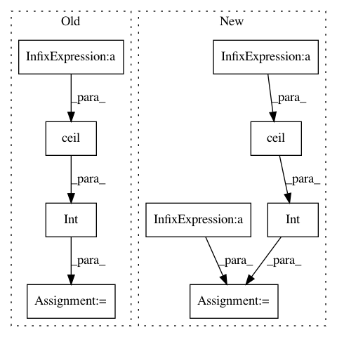

ee723d05e9cf56fa26a33735ee7bc2be882e0683,pliers/extractors/base.py,ExtractorResult,resample,#ExtractorResult#Any#Any#Any#,210
Before Change
max_duration = self.onset[-1] + self.duration[-1]
n = int(math.ceil(bin_sr * max_duration))
x = np.arange(n)
// Calculate final number of samples after re-sampling
num = int(np.round((sampling_rate / bin_sr) * n))
resampled = {}
for f_name in self.features:
values = self.data[f_name]
After Change
max_duration = self.onset[-1] + self.duration[-1]
// Calculate final number of samples after re-sampling
num = math.ceil(max_duration / interval)
// Maximum duration in bin_sr upscaling space
max_dur_bin_sr = int(num * interval * bin_sr)
x = np.arange(max_dur_bin_sr)
resampled = {}
for f_name in self.features:
values = self.data[f_name]
ts = np.zeros(int(max_dur_bin_sr), dtype=values.dtype)
start = 0
for i, val in enumerate(values):
_onset = int(start + onsets[i])
_offset = int(_onset + durations[i])
ts[_onset:_offset] = val
f = interp1d(x, ts, kind=kind)
x_new = np.arange(0, max_dur_bin_sr, step=interval * bin_sr)
resampled[f_name] = f(x_new)
new_onsets = np.arange(0, max_dur_bin_sr / bin_sr, interval)
In pattern: SUPERPATTERN
Frequency: 3
Non-data size: 9
Instances
Project Name: tyarkoni/pliers
Commit Name: ee723d05e9cf56fa26a33735ee7bc2be882e0683
Time: 2020-11-04
Author: aleph4@gmail.com
File Name: pliers/extractors/base.py
Class Name: ExtractorResult
Method Name: resample
Project Name: iskandr/fancyimpute
Commit Name: ea80e4bf2033628822e2b0f92e2e373d1b3c147b
Time: 2015-12-31
Author: alex.rubinsteyn@gmail.com
File Name: fancyimpute/auto_encoder.py
Class Name: AutoEncoder
Method Name: complete
Project Name: iskandr/fancyimpute
Commit Name: ea80e4bf2033628822e2b0f92e2e373d1b3c147b
Time: 2015-12-31
Author: alex.rubinsteyn@gmail.com
File Name: fancyimpute/auto_encoder.py
Class Name:
Method Name: make_network